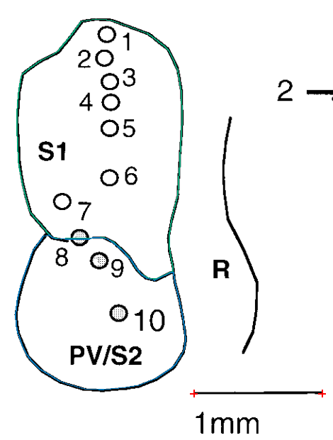

FLATMAP SURFACE AREA PROJECT
Next three papers
Higher precision contours
31 numbered figures assessed; 27 field or patch contours saved across 26 review views. Dense contours use the original source rendering at4pixels per PDF point. Source-toggle reviews include per-region zoom and editable ImageJ files.
Manual anatomical tracings remain provisional. Open boundaries are NA, dashed or obscured envelopes are marked approximate, and partial patches are not total fields. No independently established whole-neocortex denominator is available. Views and contours are not animal counts.
Krubitzer (1995)
7 numbered figures assessed · 0 field/patch contours · 22 unavailable entries
The supplied scan has saturated, merged field fills. Ten photographic panels are preserved with 22 explicit NA entries. No defensible complete field contour could be recovered; no anatomical zeros are inferred. A clearer scan is needed to recover these fields.
Enlarge & toggle contours All-figure assessment · Measurements · Methods and limits · Inventory
Krubitzer, Künzle & Kaas (1997)
9 numbered figures assessed · 15 field/patch contours · 22 unavailable entries
Tenrec cases95-22,95-29 and95-28. Complete field envelopes are separated from the partial medial S1 patch. Repeated views retain their links and do not increase specimen counts.
Enlarge & toggle contours All-figure assessment · Measurements · Methods and limits · Inventory

Krubitzer (1998)
15 numbered figures assessed · 12 field/patch contours · 23 unavailable entries
Platypus and echidna maps retain uncertain labels, partial patches and approximate envelopes. Three contours are pixel-only because no labeled physical scale is available. Historical and repeated views are not additional independent animals.
Enlarge & toggle contours All-figure assessment · Measurements · Methods and limits · Inventory